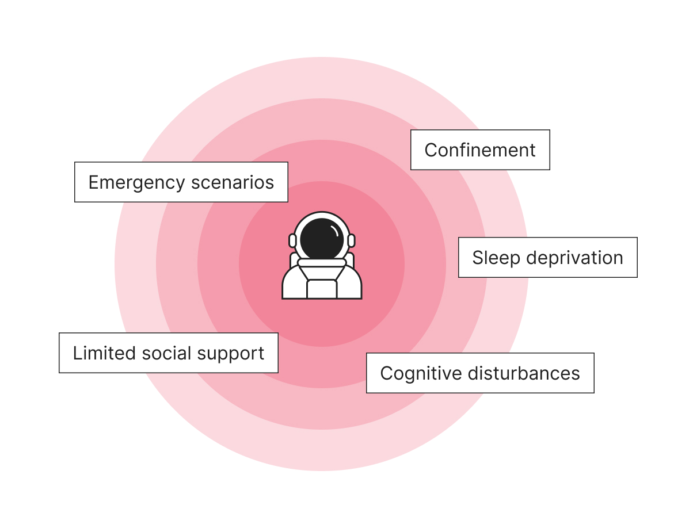
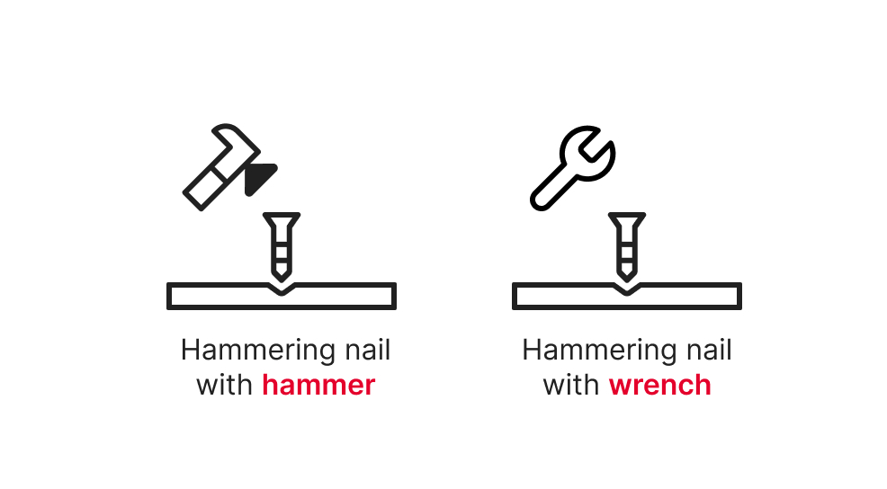
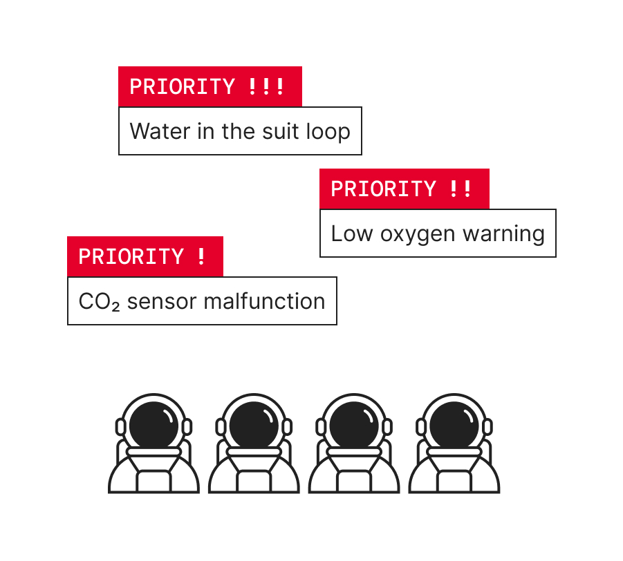
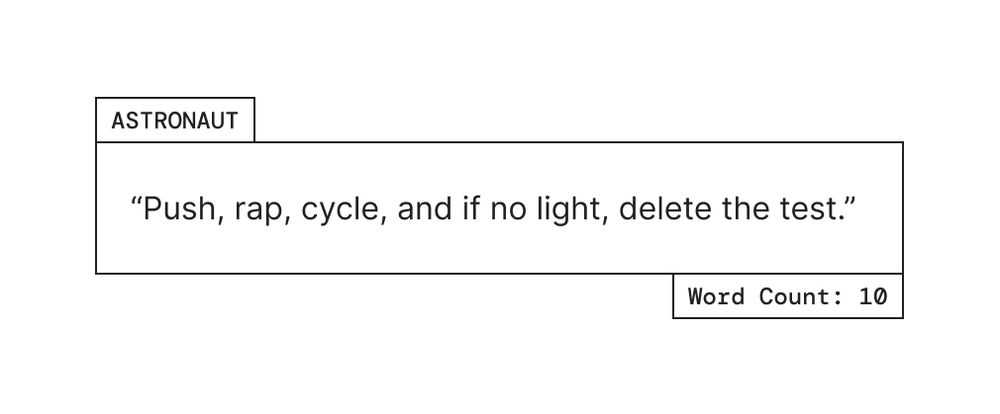

The ARRC Model
A creative problem solving model directly applicable to NASA's high risk, low support, and no backup environment

The ARRC Model, a creative problem solving model developed by Team Aegis
Four Elements of the ARRC Model
① Adaptability
-

- Example: Resilience to stress
- Astronauts face a great deal of psychological stress and pressure, even currently when folks in mission control have a combined total of over 600 years of experience. We can only begin to imagine how this will compound on a mission when a critical message of help could take 40 minutes to arrive. Some examples of these stressors can also include confinement, loneliness, the stress of high-intensity decision making during emergency scenarios, sleep deprivation, and even cognitive disturbances.
② Resourcefulness
-

- Example: Repurposing
- This is what essentially distinguishes problem solving from creative problem solving. It is the piece of the puzzle which is able to separate someone's ability to rotely memorize from being ability to creatively problem-solve.
③ Risk Assessment
-

- Example: Prioritization
- Oftentimes, astronauts will have to deal with multiple problems that are competing for their attention. With such a small crew going to Mars, it is crucial to be able to rank problems based on likelihood of fatality because this is the greatest threat to their mission.
④ Communication
-

- Example: Succint
- In particular, since every second matters when problem solving a serious anomaly, it is important to be clear and succinct. This is an example of an astronaut during apollo 15 trying to troubleshoot an issue with their thrust light. As you can see, just by using a few words, the astronaut was able to work with mission control to understand a series of commands and convey these commands in a succinct manner.